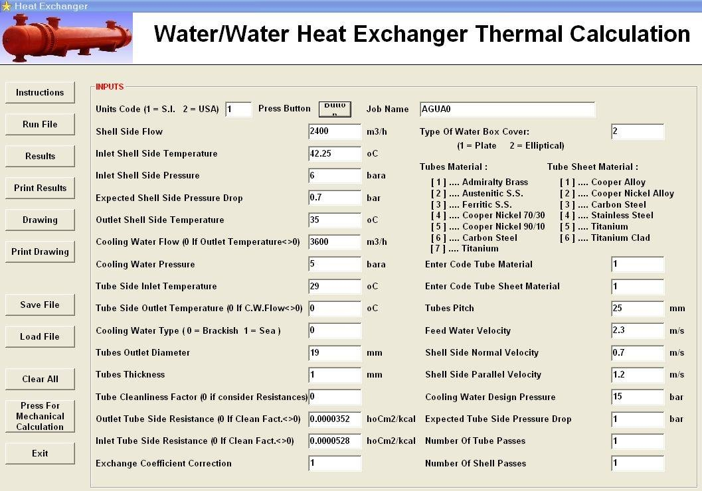
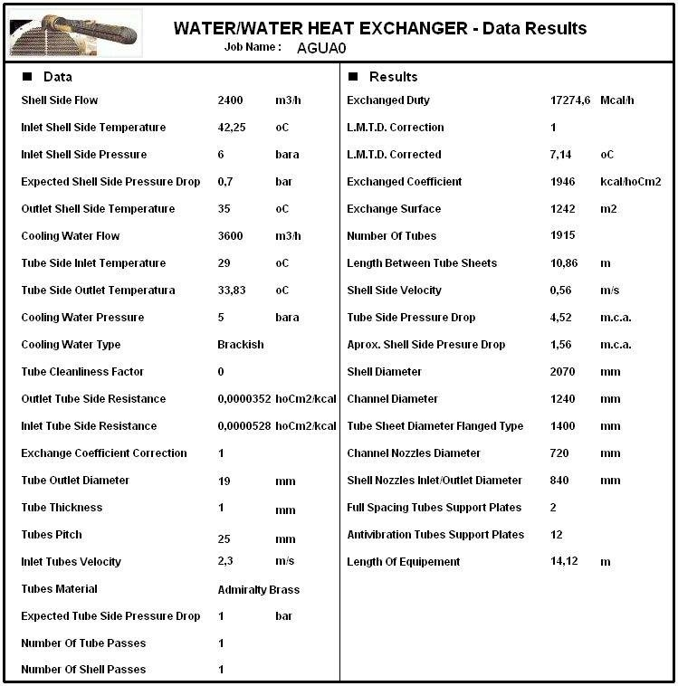
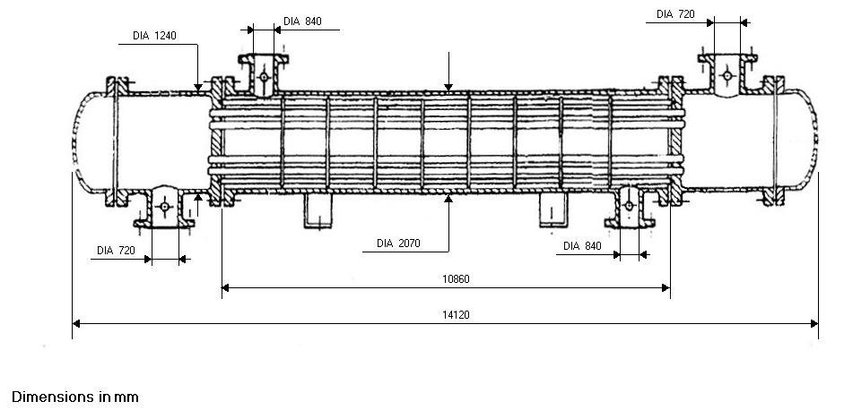
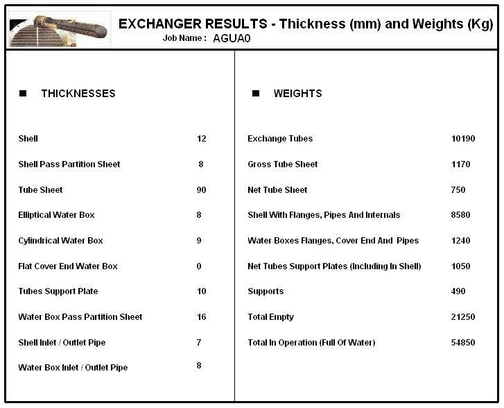

Water/Water Heat Exchanger Design Software
Thermal design and mechanical calculation of water/water heat exchangers for power stations.
Water/water heat exchangers for power stations
This program performs the thermal design and mechanical calculation of water/water shell and tube heat exchangers for applications in power stations.
Data entry
The input window collects the shell side flow, inlet and outlet temperatures and pressure, expected shell side pressure drop, cooling water flow, temperatures and pressure, type of water (brackish or sea water), tube diameter, thickness and pitch, tube and tube sheet materials, fouling resistances, shell side velocities, number of tube passes and shell passes, and type of water box cover (plate or elliptical).

Results
The results sheet gives the exchanged duty, LMTD, exchange coefficient and surface, number of tubes, length between tube sheets, shell side velocity, tube side and shell side pressure drop, shell and channel diameters, tube sheet diameter, nozzle diameters, number of support plates and length of equipment.


Mechanical calculation and weights
The mechanical module calculates the thickness of the shell, pass partition sheets, tube sheet, water boxes, support plates and pipes, and the weights of the main parts, up to the total weight empty and in operation.

Documentation
See the complete example with every input and results window in the program documentation:
Water Heat Exchanger – full documentation (PDF)Related programs
- District Heating – steam heaters for district heating systems
- Feedwater Heater – thermal and mechanical design of feedwater heaters per HEI
- Steam Transformer – steam transformer systems
Condensers, feedwater heaters, deaerators, district heating, natural gas heaters and more, with a description of each program on the home page.
See all programs →